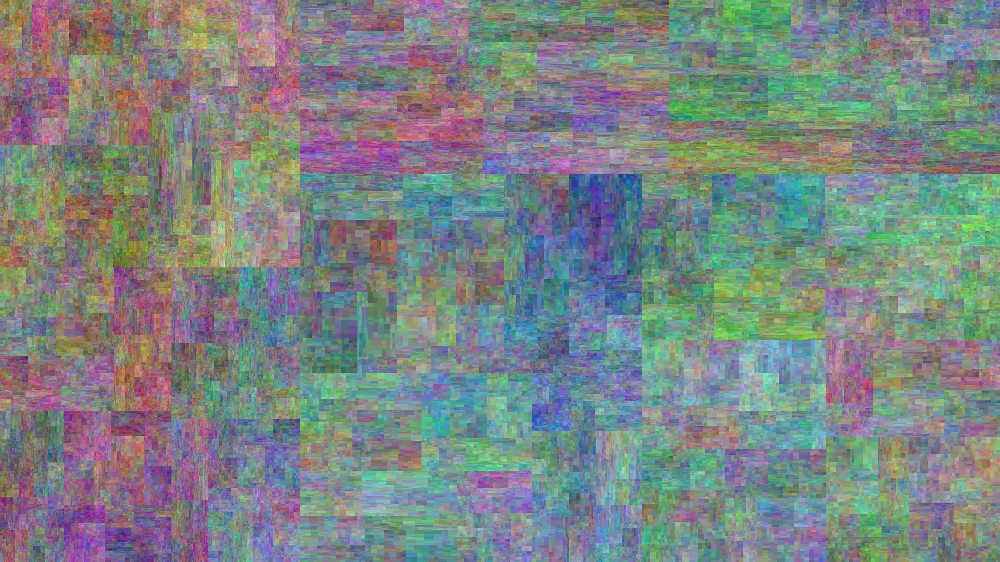

<!--
@license
Copyright (c) 2016 The Polymer Project Authors. All rights reserved.
This code may only be used under the BSD style license found at http://polymer.github.io/LICENSE.txt
The complete set of authors may be found at http://polymer.github.io/AUTHORS.txt
The complete set of contributors may be found at http://polymer.github.io/CONTRIBUTORS.txt
Code distributed by Google as part of the polymer project is also
subject to an additional IP rights grant found at http://polymer.github.io/PATENTS.txt
-->

<link rel="import" href="../bower_components/polymer/polymer.html">
<link rel="import" href="shared-styles.html">

<dom-module id="my-view1">
  <template>
    <style include="shared-styles">
      :host {
        display: block;

        padding: 10px;
      }
    </style>


    <div class="card">
      <div class="card-image">
        
        <span class="card-title"><p>Squares 9</span>
      <div class="card-content">
        <p> Starting with a blank canvas (every pixel set at 0,0,0) the canvas is split aproximately in half (following gausian distribution) vertically and the color of each side is added a or substracted (randomaly) 1 to the rgb values. The process is repeated for the now rectangles (this time in the opposite orientation) this process has been repeated 9 times. 
      </div>
    </div>
    </div>
    

    <div class="card">
      <div class="card-image">
        <iframe width="560" height="315" src="https://www.youtube.com/embed/EzIOYleToC0?rel=0" frameborder="0" allowfullscreen></iframe>
        <span class="card-title"><p>Circles</span>
      <div class="card-content">
        <p> A large zero filled matrix is gradually filled with circles. Each circle is randomlly drawn and adds a 1 to the matrix. The outlaying random landscape looks quite natural.
      </div>
    </div>
    </div>


  </template>

  <script>
    Polymer({
      is: 'my-view1'
    });
  </script>
</dom-module>
